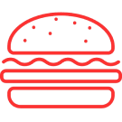

SOBRE A COLINA
Restaurante inspirado na história do gigantesco Vasco da Gama, um tradicional clube Brasileiro com Raízes Portuguesas.
O QUE FAZEMOS
SOMOS UMA HAMBURGUERIA ARTESANAL ESPECIALIZADA EM SMASH BURGERS, NOSSOS SMASHS LEVAM NOME DE MOMENTOS HISTORICOS DA HISTORIA VASCAINA OU DE IDOLOS DO CLUBE.